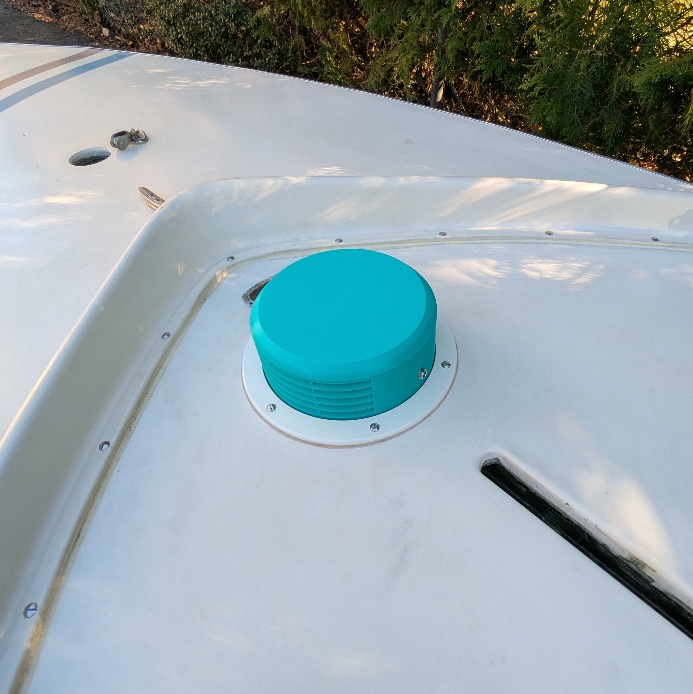
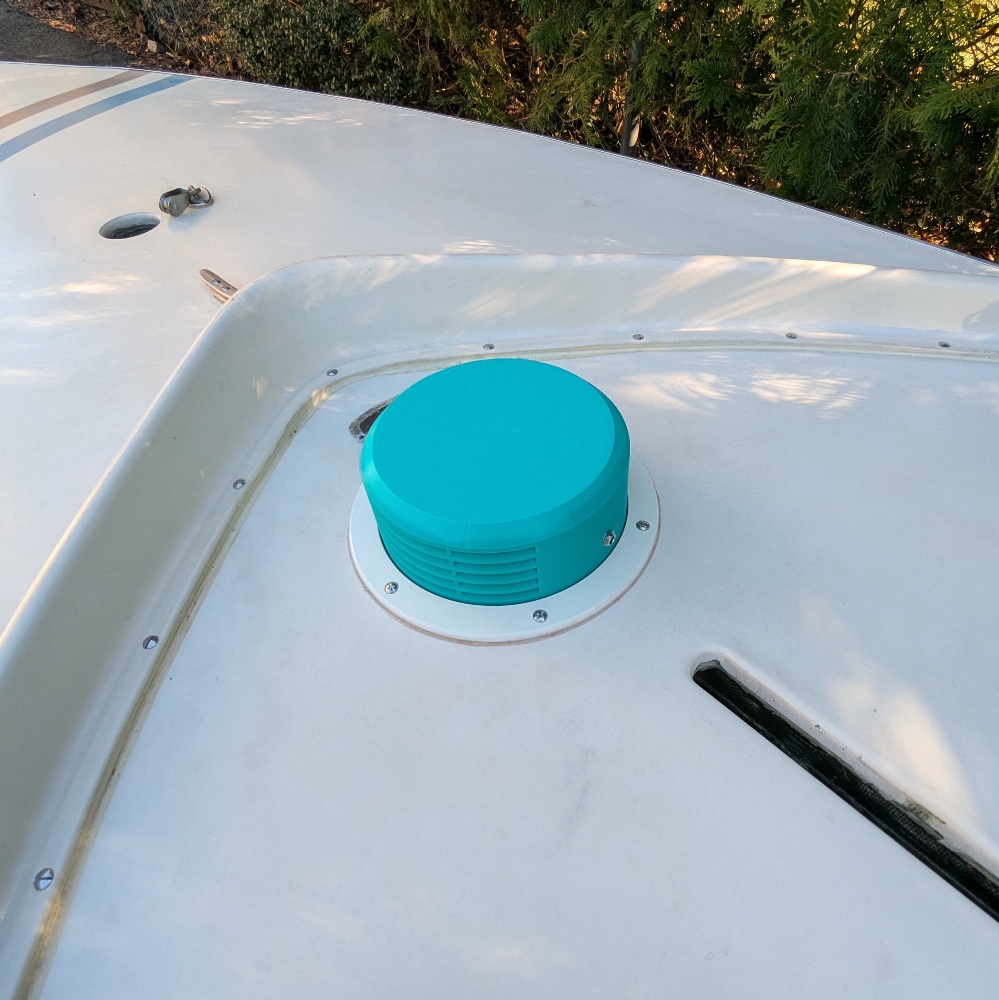

What Is the Hull Dryer?
The MarinerX Hull Dryer actively removes moisture trapped inside your boat’s hull through the inspection port. It's ideal for Sunfish sailboats and other small craft with similar access points.
Currently designed for Beckson 6" inspection ports, we are looking to expand fitment for other popular inspection port brands and sizes. Please let us know what you would like us to design for next.

 

Watch It In Action
How It Works
1. Threads directly into an inspection port
The first variant is a plug-and-play fit with a Beckson brand 6" inspection port.
2. Just plug it in
Power via 12V DC (power supply cord included). No switches, apps, or setup needed.
3. Circulates air and removes trapped moisture
Improves handling and reduces hull weight by actively drying enclosed space.
Specs
- Fits Beckson 6" threaded ports
- Powered by 12V DC (barrel jack)
- Fan rated for IP68 waterproofing
- Multiple test configurations for efficiency
Looking for compatibility with another port type? Let us know — we can 3D print alternate adapters!
Apply for Beta Testing